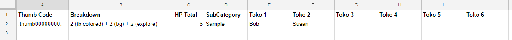

This simple-to-use website will take your database of Tokotas, and allow you
to generate a pre-formatted HP Journal for any of your Tokotas with the
click of a button! It should save you lots of time and maybe even some
visits to corrections.
Born submissive
Use blockquotes
Use subcategory headers
This generator lets you log HP for ALL your Tokotas in a single
spreadsheet, and then generate an HP journal with one click! You just
have to make sure you have your spreadsheet formatted like the template,
and you're good to go.
Your spreadsheet should look like this. Always have the first row be
headers, and make sure there are no empty rows in the middle of the
file.

To fill out the sheet, you use a new row for each deviation. For each
row, you:
In the Thumb Code column, fill out the thumb code for the deviation
you wish to include.
The Breakdown column, fill out the full HP breakdown for the piece.
Note: If different tokotas in the same piece have different HP
counts, you may enter the same deviation multiple times into the
sheet (just add a new row with the same thumb code). Only put the
individual tokotas in the row for the count that applies to them.
Enter the Total HP for the piece
The Sub-Category column is optional. If you would like to have
your HP tracker broken into subsections by activity, art type, etc,
you can add your own subtitles in here. (ex. Exploring, Hunting,
Misc, or Fullbody, Headshot, etc)
Enter the Tokota's names in the Toko columns, filling in from the
left. Leave any extras spaces blank.
Note: You can use any format for the tokota's names (you
could even use their IDs) that you want. Just make sure to use
the same name consistently for a single tokota - do not for
example use different nicknames like 'Bob' and 'Bobby', as the
generator will think they are 2 different tokotas.
Do not use commas or special characters anywhere in the sheet.
Now just save your spreadsheet as a .csv file, and you're ready to go!
To run the generator, simply:
Select your CSV file.
Select the name of the tokota you would like to generate a journal
for.
If your tokota was born submissive, check the 'Born submissive' box.
Otherwise, leave it unchecked.
If your journal skin has coded boxes that use the blockquote tag,
check the 'Use blockquotes' box. Otherwise, leave it unchecked.
If you used subcategories, check the 'Use subcategory headers' box.
Otherwise, leave it unchecked.
Press Generate HTML and copy the code.
Create or edit a deviantART or stash journal, go to Edit > Switch to
HTML mode, and paste in your generated HTML.
Version 1.0.0 | Latest Update: 11 Dec, 2017, 1:30 PM EST